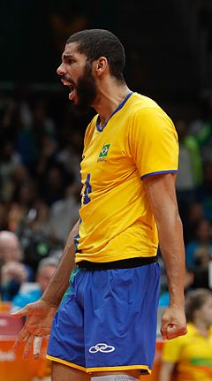
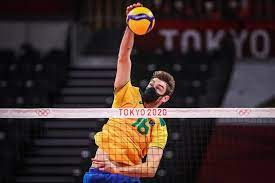

Lucarelli começou no esporte praticando futebol, natação, basquetebol e handebol, até que um dia, após acompanhar a sua irmã em um treino de voleibol, tomou gosto pelo esporte e começou a treinar em um projeto social, em sua cidade natal Contagem. Em 2005 o atleta foi chamado para treinar pelas categoria de base da Meritus, onde começou a se destacar nos campeonatos estaduais. Três anos após o ponteiro já estava atuando pelo Minas Tênis Clube, passando pelas categorias infanto, juvenil até chegar a equipe principal adulta. Em 2010 se tornou o 6º ponteiro da equipe, na temporada seguinte já era titular e melhor atacante da Superliga.[1]
Wallace começou a praticar voleibol na escola, por volta dos 15 anos, quando um professor de Educação Física o convenceu a praticar o esporte. Dali seguiu para uma peneira no Centro Olímpico do Ibirapuera e iniciou a trajetória.[1] Em 2006 o oposto já estava atuando no Banespa/São Bernardo, por onde atuou por duas temporadas. Em 2008 se transferiu para o Vôlei Futuro, onde terminou na sexta colocação na Superliga 2008–09.
De origem alemã,[1] Lucão começou sua carreira esportiva praticando basquetebol. Quando estava no primeiro ano do ensino médio, viu sua equipe de basquetebol do Colégio Martin Luther ser extinta e precisou migrar para outro esporte para continuar usufruindo da sua bolsa de estudos; foi quando começou a praticar voleibol.[2] Sem pretensões de ser atleta profissional, Lucão usava o esporte para alcançar os objetivos no estudo. Foi assim no Grêmio Náutico União, onde jogou para conseguir fazer o cursinho pré-vestibular e também na Ulbra, onde pretendia cursar biologia.[3] Seu primeiro time profissional foi a ULBRA, clube de sua cidade natal, onde jogou por três anos. Em 2007, mudou-se para a cidade de Florianópolis, em Santa Catarina, para atuar no CIMED Florianópolis. Ao lado do levantador Bruninho, foi tricampeão da Superliga e campeão sul-americano de clubes.[4] Em 2010 o gaúcho se transferiu para o Vôlei Futuro onde conquistou o título do Campeonato Paulista e nas duas temporadas seguinte atuou pelo RJX Vôlei.[5] Com a equipe carioca conquistou os títulos do Campeonato Carioca de 2012 e 2013, o terceiro lugar no Campeonato Sul-Americano de Clubes e a Superliga de 2012–13 após vencer na final única, por 3 sets a 1, o atual campeão Sada Cruzeiro.[6][7]